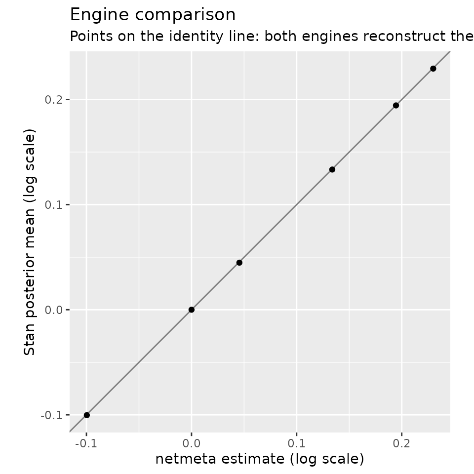

netmeta vs. Stan: two engines, one surface
Source:vignettes/netmeta-vs-stan.Rmd
netmeta-vs-stan.RmdThe v0.1 goal of directeffect, verbatim from its design: demonstrate that the same direct-effect surface is reconstructed independently by netmeta and Stan. For networks with one comparison per study — the example data here included — both engines fit the identical common-effect model
— netmeta by frequentist network meta-analysis, Stan by MCMC under a
deliberately weak normal(0, 5) prior so the comparison is
meaningful. If two independent implementations agree, an error in either
would have to be an error in both. (Multi-arm trials, whose comparisons
are correlated within a study, are the one place the engines differ:
netmeta models that correlation, and the Stan engine refuses such
networks rather than treat the rows as independent.)
Fit both engines
Both engines sit behind the same fit_surface() seam and
return the same fit contract; downstream code cannot tell them apart
except via the engine field.
library(directeffect)
de <- direct_effect_network(
example_comparisons,
anchors = example_anchors,
effect_measure = "HR"
)
fit_nm <- fit_surface(de, engine = "netmeta")
fit_st <- fit_surface(de, engine = "stan", seed = 731, refresh = 0)
fit_nm$effects[, c("drug", "estimate", "std_error")]
#> drug estimate std_error
#> 1 atorvastatin 0.00000000 0.00000000
#> 2 fluvastatin 0.22992882 0.07026365
#> 3 lovastatin 0.19452120 0.07541296
#> 4 pravastatin 0.13390032 0.03850270
#> 5 rosuvastatin -0.09962052 0.04940984
#> 6 simvastatin 0.04552752 0.03844337The Stan fit carries the same core columns plus posterior summaries and convergence diagnostics:
fit_st$effects[, c("drug", "estimate", "sd", "rhat", "ess_bulk")]
#> drug estimate sd rhat ess_bulk
#> 1 atorvastatin 0.00000000 0.00000000 NA NA
#> 2 fluvastatin 0.22939016 0.07155710 1.0001064 2914
#> 3 lovastatin 0.19436583 0.07533299 1.0003559 2985
#> 4 pravastatin 0.13336271 0.03837516 0.9999249 3035
#> 5 rosuvastatin -0.10032306 0.04913975 1.0002153 3373
#> 6 simvastatin 0.04475789 0.03848370 0.9999490 3351Compare
compare_engines() lines the two fits up per drug:
comparison <- compare_engines(fit_nm, fit_st)
comparison
#> drug netmeta stan_mean difference standardized_difference
#> 1 atorvastatin 0.00000000 0.00000000 0.0000000000 NA
#> 2 fluvastatin 0.22992882 0.22939016 -0.0005386573 -0.005371180
#> 3 lovastatin 0.19452120 0.19436583 -0.0001553687 -0.001457582
#> 4 pravastatin 0.13390032 0.13336271 -0.0005376153 -0.009889737
#> 5 rosuvastatin -0.09962052 -0.10032306 -0.0007025431 -0.010081647
#> 6 simvastatin 0.04552752 0.04475789 -0.0007696346 -0.014148824
plot_engine_comparison(fit_nm, fit_st)
Points on the identity line mean the engines reconstruct the same surface. The differences here are Monte Carlo noise plus the negligible shrinkage of the weak prior — both far below anything of scientific consequence.
Continuously enforced
This is not just a vignette exercise: the package’s test suite simulates a network under the model’s own assumptions and requires every per-drug difference between the engines’ estimates to stay below 0.02 on the log scale — and every difference between their standard errors below 0.01 — on surface and anchored fits alike, on every commit, in CI. The two implementations validate each other’s uncertainty as well as their point estimates.
Anchoring works on either engine as well — the Bayesian path refits with a separate anchored Stan model in which the anchors (not an arbitrary constraint) identify the absolute location, while the frequentist path applies a precision-weighted location offset:
absolute_nm <- anchor_surface(fit_nm)
absolute_st <- anchor_surface(fit_st, seed = 731, refresh = 0)
data.frame(
drug = absolute_nm$effects$drug,
netmeta = round(absolute_nm$effects$estimate, 3),
stan = round(absolute_st$effects$estimate, 3)
)
#> drug netmeta stan
#> 1 atorvastatin -0.324 -0.323
#> 2 fluvastatin -0.094 -0.101
#> 3 lovastatin -0.129 -0.135
#> 4 pravastatin -0.190 -0.196
#> 5 rosuvastatin -0.423 -0.401
#> 6 simvastatin -0.278 -0.284